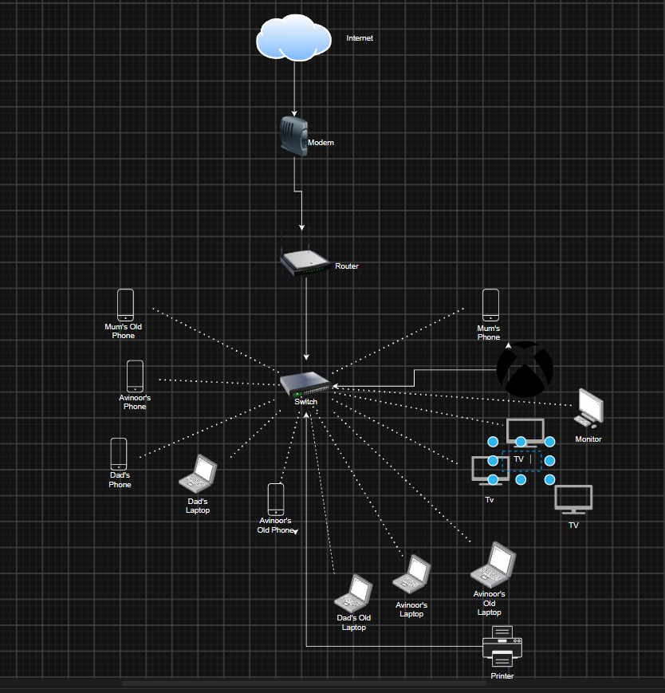
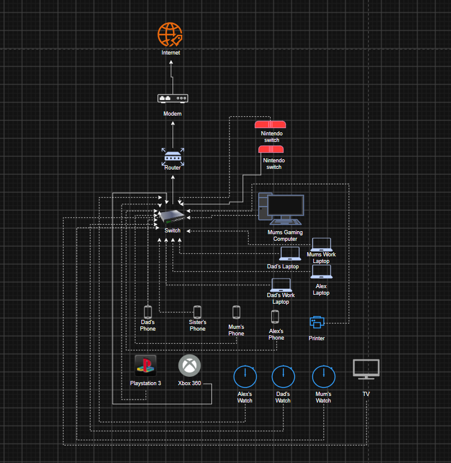

Networking
What is a Network?
A network is when 2 or more devices are connected together so they can communicate, exchange information or share resources. Devices that can conect to a network include computers, smartphones, printers, game consoles and servers. Compatiable devices can connect to a network using a wired connection, such as ethernet cables or wireless connections such as Wi-Fi.
A network allows devices to:
Share files such as photos
Access the internet
Communicate through messages, calls, or emails
Share hardvare, such as storage devices/home storage servers and printers
Access shared services such as websites and online games
Networcs can range from small home networks to missive global networks containing millions of devices
Networking Hardware
Networks rely on hardware to link devices to a network. Different components perform different tasks.
Router: Connects different networks and directs data between them, such as a home network to the internet
Switch: Conects devices within the network and transfers data to the correct devices using a MAC address
Modem: Converts signals in a network and internet connections
Wireless Access point (WAP): This allows allows wireless devices to connect to a network using Wi-Fi
Ethernet Cable: Phisically connects devices to a network by transfering data through electrical signals
Moden home routers combine most of these fetures into one device (mainly router, switching and wifi connectivity).
LAN
A local Area Network (LAN) connects devices within a relitivaly small distance (sutch as a home). A LAN connection use ethernetm switches and wireless access points to connect devices to a network. A common type of LAN is called WLAN (Wireless Local Are Network) which uses Wi-Fi instead of wired connections. Wired ethernet connections are known for providing more stable performence and lower latency, however this may vary depending on your network equipment
Most inportantly, Lan does not need an internet connection to operate. Connected devices can still comunicate locally even when there is no internet/Wi-Fi connection.
WAN
A Wide Area Network (WAN) connects devices or smaller networks in a large area (sutch as cities, states and counteries).
Unlike LAN, WAN can link/connect multiple LANs using an infrastructure which is provided by telecommunication companies and internet providers.
WAN connections can use:
1. Fiber optic cables: Transmits infomation as pulses of light over long distances (often a faster choice of internet)
2. Copper based connections: They cary electical signals through a copper wire (much slower than fiber optic)
3. Mobile Networks: Uses radio signals to provide a network connection across wide areas (often used in celular smartphones)
4. Satellite connections: Transfer information across wide areas using satellites
The internet is the largest example of a global network of interconnected networks. It connects millions of LANs, WANs and other networks worldwide.
What are Internet Protocols?
Think of internet protocols as a set of rules assigned to each network connection. They control how information is transmited between devices and the network. Different protocols perform different action, which include delivering packets of data, establishing connections and protecting infomation.
HTTPS
Hypertext Transfer Protocol Secure (HTTPS) is a secure protocall used when a device in a network communicates with websites. it uses an encryption through Transport Layer Secirity (TLS) to protect information exchanged between your browser and a website.
Encryption
An encryption converts readable information (known as plaintext), into scranbled information called ciphertext by using mathematical algorithms and encryption keys. Only someone with the correct decripotion key cab restore the original information (the plaintext).
Encryption helps protect vital user information such as passwords, banking details and private messages while they travel across networks.
How Data Packets Travel Across the Internet
When files such as text or images are sent across the internet, the digital data is split up into smaller pieces called packets. This allows information to travel efficiently across the internet.
Each packet includes a part of the original data, along with the information to help deliver the packet to the correct destination.
This prosess works in 4 main stages:
Spliting: When the data is divided into small packets.
Addressing: When the packets contain the destonation information so the network knows where to sent them.
Transmition: The routers pass on the packets across interconnected networks. Different packets may travel along different routes.
Reassembly: The recieving device uses the network protocalls to piece the information together in the correct order, allowing the original text or inage to be desplayed.

Avinoor's Home Network
